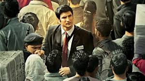
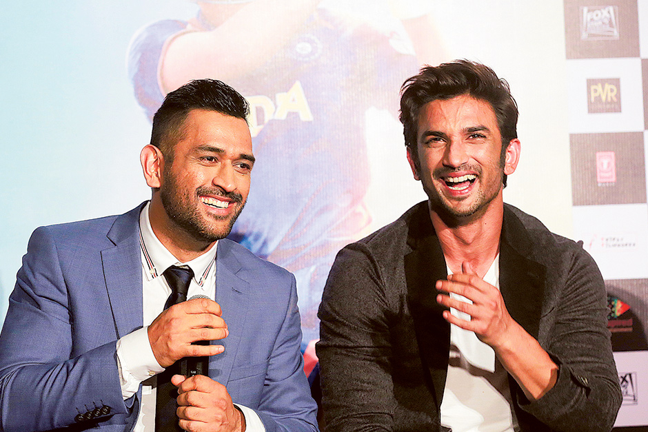

AWARDS AND ACHIEVEMENTS
National Honours
- 2018:Padma Bhushan, India's third-highest civilian award.
- 2009: Padma Shri, India's fourth-highest civilian award.
- 2007–08:Rajiv Gandhi Khel Ratna, India's highest honor given for achievement in sports.


SPORTING HONOURS
- ICC ODI Player of the Year: 2008, 2009
- ICC World ODI XI: 2006, 2008, 2009, 2010, 2011, 2012, 2013, 2014 (captain in 2009, 2011–2014)
- ICC World Test XI: 2009, 2010, 2013
- Castrol Indian Cricketer of the Year: 2011
- ICC Men's ODI team of the decade: 2011 - 2020 (captain and wicketkeeper)
- ICC Men's T20I team of the decade: 2011 -2020 (captain and wicketkeeper)
- ICC Spirit of the cricket award of the decade: 2011 - 2020


OTHER HONOURS AND AWARDS
- MTV Youth Icon of the Year: 2006
- LG People's Choice Award: 2013
- Honorary doctorate degree by De Montfort University in August 2011
- CNN-News18 Indian of the Year: 2011
IN POPULAR CULTURE
A movie was made based on Dhoni's life, from his childhood to the 2011 Cricket World Cup, titled M.S. Dhoni: The Untold Story, with Sushant Singh Rajput in the titular role.Another web series centered on his life and his times with the Chennai Super Kings in the Indian Premier League aired on Hotstar on 20 March 2019, titled Roar of the Lion.
 